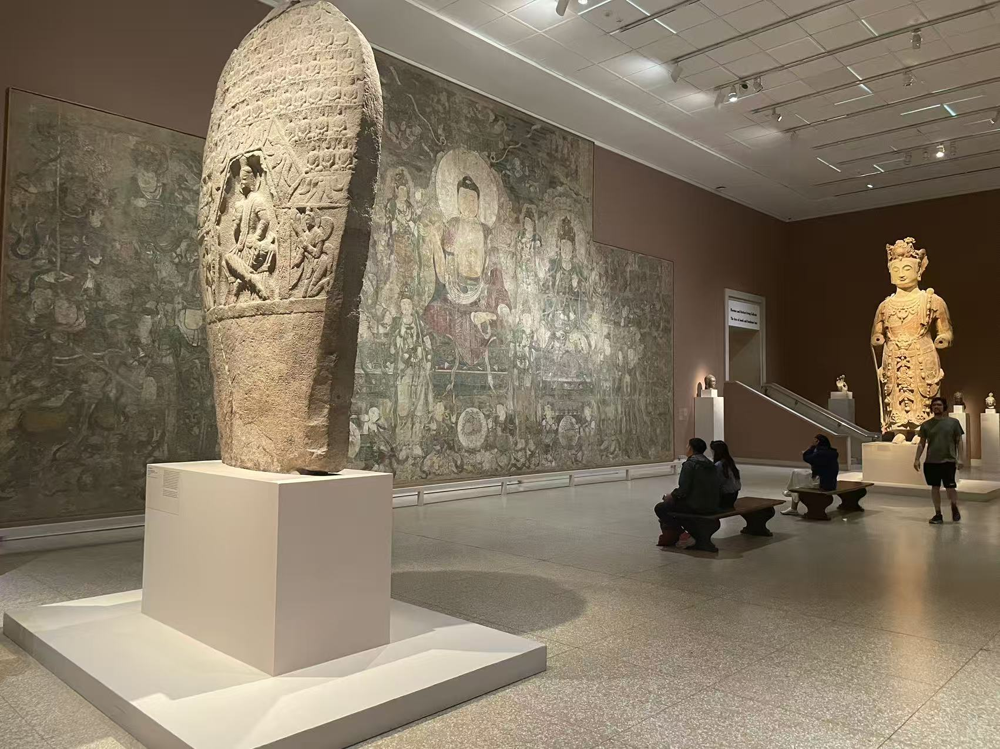

元 / 寺院壁画
药师佛法会图
看画
点击照片可放大；有多张照片时，可以切换查看。

作品札记
在展厅里，这幅壁画横向展开约十五米。中央佛像的身体与头光立起中轴，两旁的菩萨和层层眷属向外延伸。近看满是冠饰、首饰与衣纹，退远一些，大的身形和圆形头光仍把画面稳稳地组织起来。
馆方将中央主尊辨认为药师佛。展签图解把持日轮、月轮的两位站立菩萨标为日光与月光；他们与更大的两位坐姿菩萨要分别看。外侧的护法群像则与药师佛的十二神将相联系。人物很多，手中的器物、姿势和在主尊周围的位置，比单看面容更能帮助辨认。
颜料画在掺有草料的泥质地仗上。现场说明介绍，画师先以有力的黑线组织轮廓，再施加植物和矿物颜料；如今留存的红、绿、白等色彩，也让墨线格外显眼。大都会把它的风格联系到朱好古画坊，而未将它署为朱好古亲笔。
它来自广胜下寺大雄宝殿东壁，现存的另一面大壁画在纳尔逊。1965年，阿瑟·赛克勒（Arthur M. Sackler）为纪念父母艾萨克与索菲，将这幅画赠予大都会。现场说明将画作放在1303年地震后、至1319年前后的修建背景中；这也是馆方采用“约1319年”断代的历史语境。
资料：大都会：药师佛法会图
展厅中的壁画
点击照片可放大；有多张照片时，可以切换查看。

